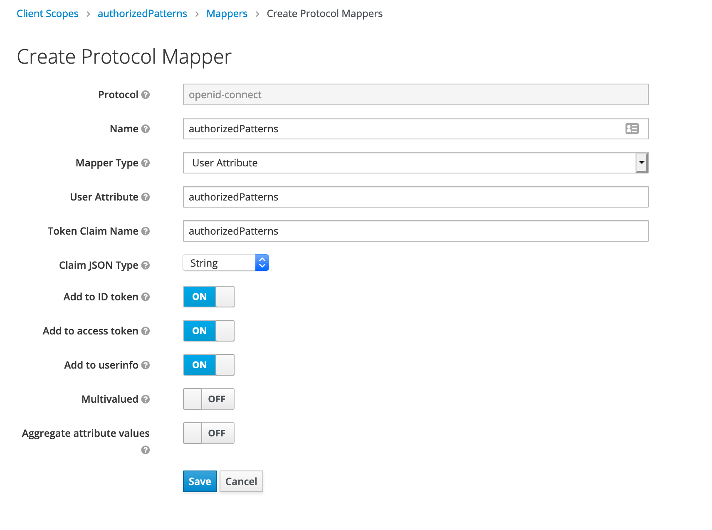
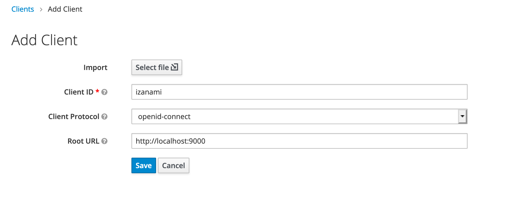
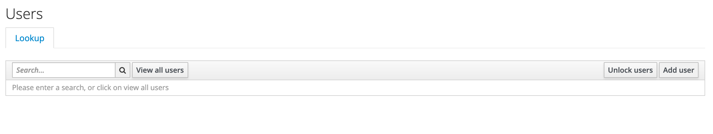
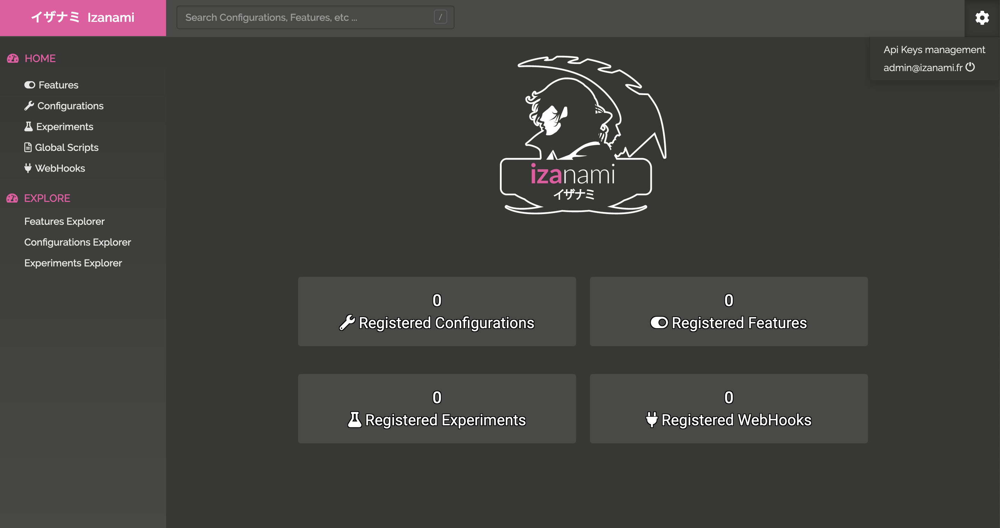
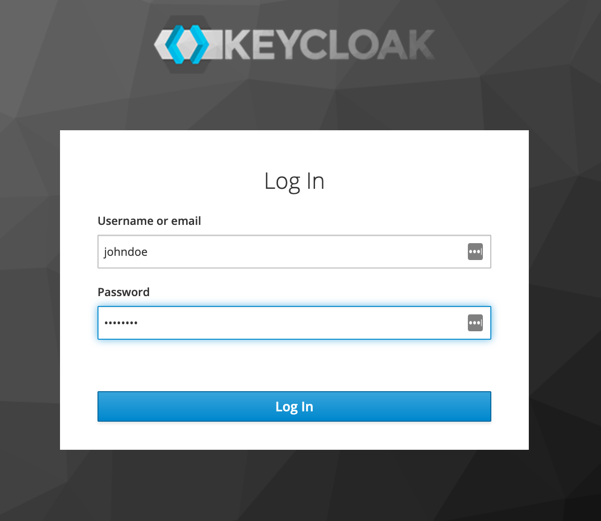

Oauth2 with keycloak
This tutorial show how to delegate user authentication to keycloak using oauth2.
On keycloak, you’ll need to * define scope for custom field * set a dedicated client for Izanami * add scope to client * create users with custom attributes * Configure Izanami
Running keycloak
Just use docker :
docker-compose -f docker-compose.oauth.yml up
Go to http://localhost:8980 and log with izanami / izanami.
Define scope
You first need to define new scopes for * authorizedPatterns : the pattern applied on keys that the user is able to use * admin : a boolean to define id the user will be admin
Define a new scope for authorized patterns field
### Define a mapper for authorized patterns field
Define a mapper for the authorizedPatterns field with a mapper type UserAttribute and the name of the attribute and the name in the claim. Here the name will be authorizedPatterns and the type in json will be a string.

Define a new scope for the admin field
Define a mapper for the admin field
Define a mapper for the admin field with a mapper type UserAttribute and the name of the attribute and the name in the claim. Here the name will be admin and the type in json will be a boolean.

Create an Izanami client
Create a new open id connect client and name it izanami. Set the root url to the url of your server.

In the settings, fill the field with the various urls of izanami.
In the client scope panel, add the two scopes created previously.

Next step create some users.
Create users
We will create two users : * one admin user * one user with restricted access
In the users menu, add a new user

Admin user
Create an admin user
In the attributes panel, add two attributes

Random user
Create an simple user
In the attributes panel, add the restriction pattern
Configure izanami
Assuming that keycloak was started on 8980 port you can set the following configuration :
oauth2 {
enabled = true
authorizeUrl = "http://localhost:8980/auth/realms/master/protocol/openid-connect/auth"
tokenUrl = "http://localhost:8980/auth/realms/master/protocol/openid-connect/token"
userInfoUrl = "http://localhost:8980/auth/realms/master/protocol/openid-connect/userinfo"
introspectionUrl = "http://localhost:8980/auth/realms/master/protocol/openid-connect/token/introspect"
loginUrl = "http://localhost:8980/auth/realms/master/protocol/openid-connect/auth"
logoutUrl = "http://localhost:8980/auth/realms/master/protocol/openid-connect/logout"
clientId = "izanami"
clientSecret = "secret"
scope = "openid profile email name admin authorizedPatterns"
readProfileFromToken = true
useCookie = false
useJson = false
idField = "sub"
accessTokenField = "access_token"
nameField = "preferred_username"
emailField = "email"
adminField = "admin"
authorizedPatternField = "authorizedPatterns"
defaultPatterns = ""
}
Or with environment variables :
OAUTH2_ENABLED="true"
OAUTH2_AUTHORIZE_URL="http://localhost:8980/auth/realms/master/protocol/openid-connect/auth"
OAUTH2_TOKEN_URL="http://localhost:8980/auth/realms/master/protocol/openid-connect/token"
OAUTH2_USER_INFO_URL="http://localhost:8980/auth/realms/master/protocol/openid-connect/userinfo"
OAUTH2_INTROSPECTION_URL="http://localhost:8980/auth/realms/master/protocol/openid-connect/token/introspect"
OAUTH2_LOGIN_URL="http://localhost:8980/auth/realms/master/protocol/openid-connect/auth"
OAUTH2_LOGOUT_URL="http://localhost:8980/auth/realms/master/protocol/openid-connect/logout"
OAUTH2_CLIENT_ID="izanami"
OAUTH2_CLIENT_SECRET="secret"
OAUTH2_SCOPE="openid profile email name admin authorizedPatterns"
OAUTH2_READ_FROM_TOKEN="true"
OAUTH2_USE_COOKIE="false"
OAUTH2_USE_JSON="false"
OAUTH2_ID_FIELD="sub"
OAUTH2_ACCESS_TOKEN_FIELD="access_token"
OAUTH2_NAME_FIELD="preferred_username"
OAUTH2_EMAIL_FIELD="email"
OAUTH2_ADMIN_FIELD="admin"
OAUTH2_AUTHORIZED_PATTERN_FIELD="authorizedPatterns"
OAUTH2_DEFAULT_PATTERN=""
Now if you hit the http://localhost:9000 izanami homepage, you’re redirected to the keycloak login page :

Just set the admin credentials
It’s fine, the user has access to the api keys configuration, he is an admin.

Retry but this time using the johndoe account

The api keys configuration, he is not available anymore

And the user is not able to create a feature with a pattern he is not allowed